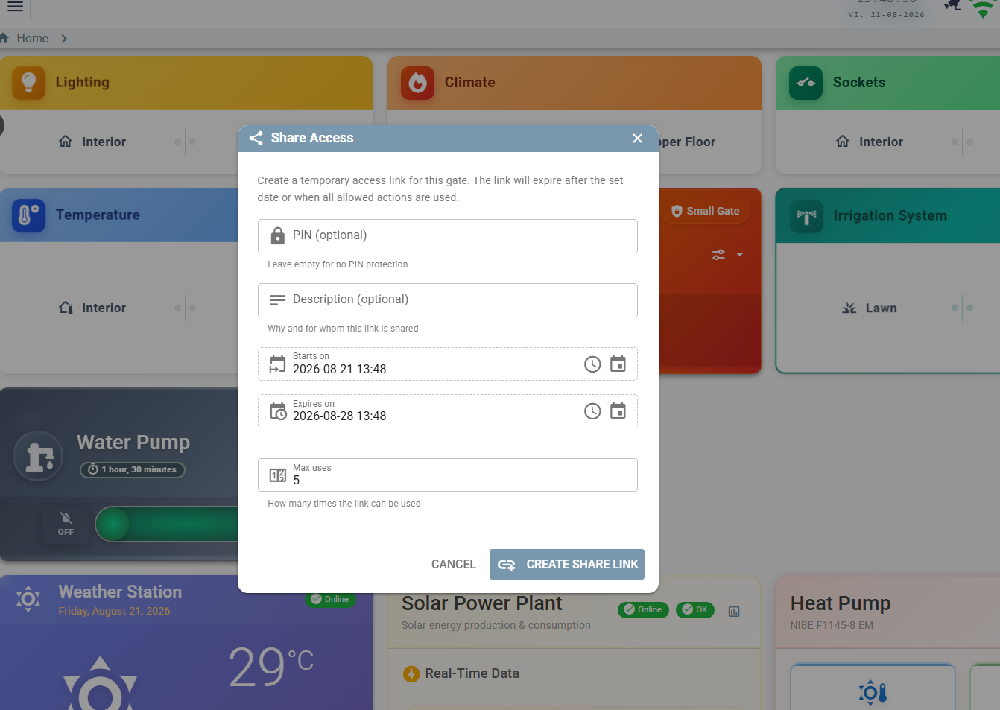
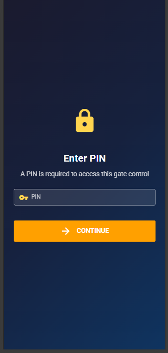
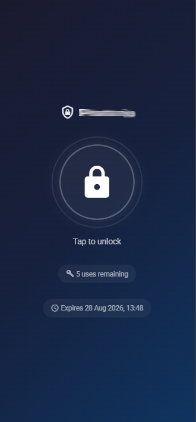
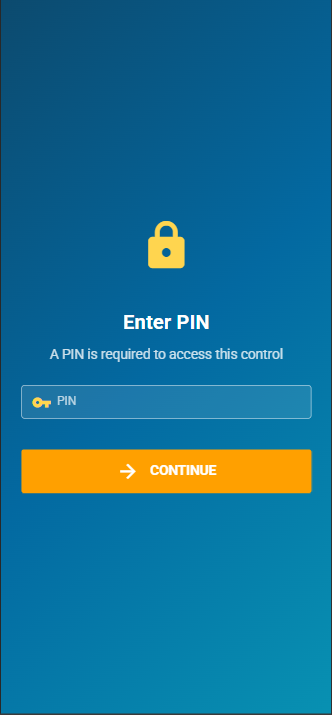
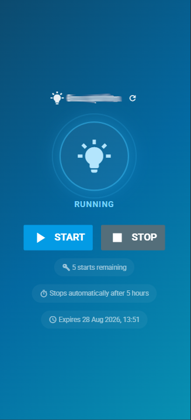

Sharing & QR labels
Give someone control of exactly one thing, for exactly as long as you mean to — and label your hardware so you can find it again.
Shared links
A shared link is a tokenised public URL that operates a single peripheral, a limited number of times, within a validity window, optionally behind a PIN. The recipient needs no account, no app and no access to anything else in the house.
The typical case: a visitor arriving tomorrow who needs the gate to open three times.
Creating one
Share Access sits in the dropdown of every peripheral card that supports it.

| Field | Meaning |
|---|---|
| PIN | Optional. Leave empty for a link that works on its own. |
| Description | Why and for whom — it shows in the admin list, which is what you will be reading in three weeks. |
| Starts on | Before this the link reports not yet active. |
| Expires on | After this it flips to expired automatically. |
| Max uses | Total allowed actions. For switches this reads max starts. |
The result is a URL of the form https://your-host/shared/<32-hex-token>.
Widget types
| Type | Peripheral | Actions |
|---|---|---|
GATE_ACCESS | Gate or door lock | open — a single pulse |
LIGHT | Any light | on, off |
WATER_PUMP | Water pump | on, off |
SPRINKLER | Any sprinkler | on, off |
How uses are counted
A gate link spends one allowance per open. A switch link spends one per start
— off is always free, and stays available even after the allowance is spent or the end
date has passed.
Someone who has used their last start must still be able to stop the water. Only an explicit Disable or Archive removes the stop control.
| Allowance | Action | Result | Used |
|---|---|---|---|
| 2 | on | started | 1 |
| 2 | off | stopped | 1 (unchanged) |
| 2 | on | started; link flips to EXPIRED | 2 |
| 2 | on | 403 — allowance spent | 2 |
| 2 | off | stopped — still permitted | 2 |
What the guest sees




The public page shows live state, how many starts remain, when the link expires and — for switches — the auto-off timeout inherited from the peripheral (“stops automatically after 5 hours”). It has no authenticated WebSocket, so it re-reads state after each action and offers a manual refresh.
States
| State | Meaning |
|---|---|
VALID | Usable. |
NOT_YET_ACTIVE | Start date is in the future. Computed, never stored. |
EXPIRED | End date passed or allowance exhausted. The transition is automatic and records its reason. |
DISABLED | Switched off by an admin. Reversible. |
ARCHIVED | Retired. Kept for its audit history. |
Audit trail
Every attempt is recorded — successful or denied — in a dedicated table, one row per
attempt: the action, the result (SUCCESS, DENIED_PIN,
DENIED_STATE), the reason for a denial, the client address and the user agent.
- Rows are written in their own transaction so they commit independently; a failed audit write is logged and never breaks the action.
- Denied attempts are recorded precisely because nothing downstream runs for them — they would otherwise leave no trace.
- An unknown token writes no row: there is no link to attach it to.
- The audit table is deliberately excluded from the auto-generated CRUD API, so rows cannot be forged or deleted over GraphQL.
In the admin list, clicking a link's usage or history opens a collapsible usage history: timestamp, action, result badge, IP and user agent.
trustedProxies.
The audit records the first hop of X-Forwarded-For, falling back to the socket peer.
Without a trusted-proxy list you will see your proxy's address on every row instead of the
visitor's. See Configuration → Security settings.
Public API
These three endpoints are the only anonymous surface in the whole application.
| Method | Path | Purpose |
|---|---|---|
GET | /api/public/share/:token | Link metadata. Never returns the PIN. |
POST | /api/public/share/:token/verify-pin | Check a PIN without acting. |
POST | /api/public/share/:token/action | Perform the action. |
GET /api/public/share/<token>
{
"widgetType": "WATER_PUMP",
"requiresPin": false,
"state": "VALID",
"peripheralName": "Water pump",
"actionsAllowed": 2,
"actionsUsed": 0,
"shareExpireDate": 1755500000000,
"currentState": false,
"autoOffTimeout": "900",
"offAllowed": true
}POST /api/public/share/<token>/action
{ "action": "on", "pin": "1234" }
{ "success": true, "action": "on", "actionsRemaining": 1, "offAllowed": true }
Failure modes: 400 for a missing token or an action other than on/off;
404 for an unknown token; 403 for a wrong PIN or an unusable state.
The action is dispatched onto the event bus fire-and-forget. The public page re-reads metadata a moment later to show the device's real state.
Security properties, stated plainly
- PINs are a speed bump, not a credential. They are stored and compared in plaintext, with a non-constant-time comparison. Do not treat one as protecting anything valuable.
- There is no rate limiting on PIN verification or actions. The audit trail makes brute force visible after the fact; preventing it is your reverse proxy's job.
- The token is the secret. Anyone holding the URL can use it within its window — send it over a channel you trust.
- Any admin-authenticated caller can list every link, including raw tokens. There is no per-owner scoping.
- Concurrent requests can race the use counter; a link with two remaining uses could, under deliberate parallel load, be used three times.
QR labels
The second half of “finding your own hardware again”: printable labels for cables, devices and peripherals, with an optional QR code, and an in-app scanner that jumps straight to the right screen.
Printing
- Brother-style labels for cables, devices and peripherals.
- A dedicated QR settings page controls whether labels carry a code, what it encodes, and its size and position.
- What it encodes is a template with variables — the default is a stable, base-URL-free token.
It encodes myhab://TYPE/ID, so a label printed today keeps working if you move the
deployment to a different domain tomorrow. Resolution happens inside the app, which already knows
where it is.
Scanning
Scan QR in the sidebar opens the device camera and navigates directly to the cable, device or peripheral on the label. It is pure web — the PWA using the camera API — so there is nothing to install.
The practical value is in the attic: point a phone at a cable tag and get the port it lands on, the peripheral it feeds, and its event history, without knowing anything about how it was named.